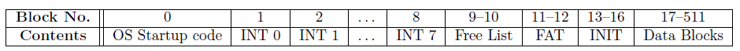
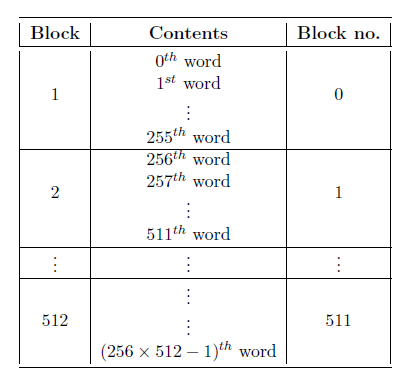
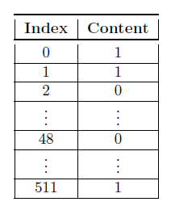
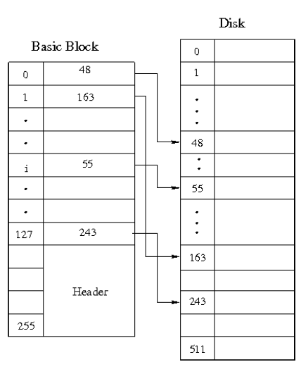
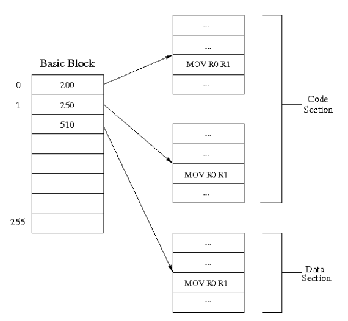
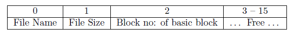

File System
Introduction
Block : It is the basic unit of storage in the disk.
The disk can be thought of as consisting of a linear sequence of 512 blocks.
The size of each block is equal to that of a page in the memory (256 words).
Disk Structure
The basic structure of the disk is shown in figure~\ref{fig:disk}.

Structure of the disk
Addressing
Block number : Any particular block in the disk is addressed by the corresponding number in the sequence 0 to 511 known as the block number.

Disk addressing
In figure~\ref{fig:disk addr}, the 2nd block of the disk has a block number 1. In general the ith block has the block number (i-1) for 1 ≤ n ≤ 512.
Disk Free List
- The Free List of the disk consists of 512 entries. Each entry is of size one word.
- The total size of the free list is thus 2 blocks or 512 words (512(= no. of entries) x 1(= size of one entry) = 512 words).
- It is present in blocks 9 and 10 of the disk. Refer figure~\ref{fig:disk}. \index{Disk!Free List Location}
- Each entry of the free list contains a value of either 0 or 1 indicating whether the corresponding block in the disk is free or not respectively (It should be ensured that the first 13 entries are always marked used).
Figure~\ref{fig:disk free list} indicates that the blocks 0, 1 and 511 of the disk are not free while blocks 2 and 48 are free.

A sample free list of the disk
File
A file \index{File} is a collection of data identified by a name. Every file in the disk has a Basic Block and several Data Blocks. They are defined as follows:
- Data Blocks : These blocks contain the actual data of a file. \index{File!Data Block}
- Basic Block : It consists of information about the data of a file. \index{File!Basic Block}

Example illustrating the basic block of a file
Consider the example illustrated by figure~\ref{basic block example}.
From the figure, we infer the following.
- The zeroth data block of the file resides at the disk block whose block number is 48.
- The first data block of the file resides at the disk block whose block number is 163.
- The ith data block of the file resides at the disk block whose block number is 55 where 0≤ i ≤ 127.
- The 127th data block of the file resides at the disk block whose block number is 243.
File Types
There are two types of files in the ESIM architecture. They are:
- Data files : These files contain data or information that is used by the programs. They can occupy a maximum of 129 blocks (1 basic block + 0 - 128 data blocks).
- Executable files : These contain programs that the user wishes to run on the machine. They occupy 4 blocks (1 basic block + 3 data blocks) of the disk.
Executable File Format
Any executable file has the following format. Refer figure~\ref{fig:executable}.
- It consists of the Code section and the Data section.
- Code section : This section contains the actual code to be run on the machine. It spans 2 blocks irrespective of the size of the code.
\index{Executable File Format!Code Section}
- Data Section : This section consists of data that is used in the code which cannot be stored in a register. The registers then store the logical address of the corresponding data residing in the data section. It spans 1 block. \index{Executable File Format!Data Section}

Example illustrating the structure of an executable in the disk
File Allocation Table (FAT)
File allocation table (FAT), as the name suggests, is a table that has an entry for each file present in the disk.
- FAT of the filesystem consists of 32 entries. Thus there can be a maximum of 32 files.
- Each entry is of size 16 words.
- Total size of the FAT is thus 512 words (32 (= number of entries) x 16(= size of one entry) = 512 words).
- It is a disk data structure and occupies block numbers 11 and 12 of the disk. Refer figure~\ref{fig:disk}.
\index{File Allocation Table!Location in disk}
The structure of a FAT entry is shown in figure~\ref{fig:fat_entry}.

Structure of a FAT entry
The FAT entry consists of the
\index{File Allocation Table!FAT Entry}
- File Name : It is an identification of a file. It can be of maximum 15 characters (and thus requires 1 word). Typical file names are student.txt, calc.sim.
- File size : It indicates the number of words occupied by a file. It varies from 0 words to (128 x 256) words (depending upon the number of data blocks it has). It occupies one word in the FAT entry.
- Block number of basic block : It contains the block number where the basic block of a file resides in the disk. It occupies one word in the FAT entry.